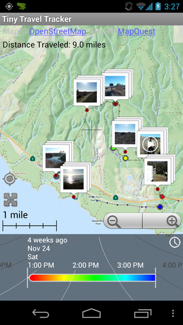
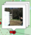
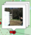
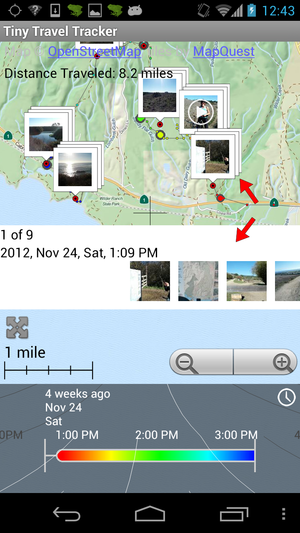
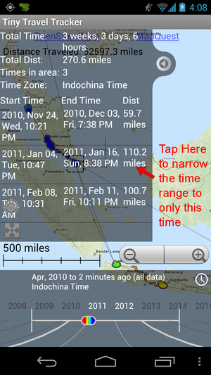

TODO add "back to top" link at the end of each section
TODO add width="100%" and no height for all big images.
Shrink images down to save space
Table of Contents
<TODO more detail with pictures>
Interfacing with the Map 1
Security 4
Tiny Travel Tracker keeps track of your GPS location in a private, encrypted database able to store and effectively view hundreds of thousands of GPS points, which are all stored directly on your phone. It has an advanced user interface to see exactly when and where you have gone. The data is owned and viewable only by you, and can be exported to a standard GPX format to use as you wish.
The GPS tracking can be throttled in order to
conserve battery life, making it entirely feasible to leave on
continually and have an automatic electronic journal of everywhere
you have gone.
This screen shows a map of the world along with
GPS points recorded, as shown in Figure 1.1, below. Any pictures
and video that were taken will also automatically be shown where
they were taken along the GPS trail.
|
|
| Figure 1.1 The main map screen |
The map can be panned by sliding your finger
across it, and zoomed in and out by pressing the zoom
buttons,  , or pinching your fingers in and out.
, or pinching your fingers in and out.
After collecting a large number of points, you
often will want to view a small time range, such as a single day,
week, or month. The Time Range, shown below in Figure 1.2,
is used to do this.
 |
|
Figure
1.2 The gray area at the bottom selects the time being
viewed and can be adjusted by sliding your finger across
it |
The time range can be moved by sliding your
finger across the panel side to side, or up and down. Sliding side
to side will move backwards and forwards in time. Dragging
up and down will increase and decrease the time scale, from months
all the way down to minutes. If the trail goes off the map, you
may have to zoom out or adjust the map view. You can also use the
Auto Zoom button,  , as described here (TODO LINK)
, as described here (TODO LINK)
The current time range will be shown in the
white text at the top of gray panel. This corresponds to the time
that falls within the H shaped marker in the center. For example
in Figure 1.3, below, the time range is April through August.
 |
| Figure 1.3 Time View with time range from April to August, 2012 |
The color of the trail corresponds to the colored area in the
bottom panel. In Figure 1.4, below, the orange color is
around May 29th, and the GPS Trail indicates the user was in
Istanbul. The green color is June 1st, and the user was near the
center of Turkey, and the blue color was around June 4th,
and the user was on the southern shore.
 |
| Figure 1.4 The colors of GPS Trail correspond to the times in the bottom panel |
You can also use the Auto Zoom button which will
fit the map to the current time range displayed. For instance, in
Figure 1.5, below, only part of the points within the time range
are visible.
 |
| Figure 1.5 The Auto Zoom button will recenter the map to show the current GPS trail |
By tapping the Auto Zoom button,  , the map view
will automatically shift so the entire visible GPS trail for the
selected range will be shown as in Figure 1.6, below.
, the map view
will automatically shift so the entire visible GPS trail for the
selected range will be shown as in Figure 1.6, below.
 |
| Figure 1.6 After tapping Auto Zoom button the map view shifts to
show all GPS points within the selected time range |
The Distance Traveled field shows the approximate distance
traveled during the time range selected.

The accuracy of the value displayed will depend on the number of
GPS points taken and the accuracy of your GPS hardware.
The Date Chooser Button, shown below in Figure 1.7 is used to
choose specific start and end times

|
| Figure 1.7 The Date Chooser Button |

|
| Figure 1.8 The Date Chooser screen. This can be used to select a specific time range to show on the main screen |
After selecting a specific time range and hitting
OK, the main screen will appear showing the GPS trail for the
specific time range.
Pictures and videos taken by your phone will
automatically show up on your GPS trail, as shown below in Figure
1.9
|  |
| Figure 1.9 Map view with pictures and videos displayed |
You can turn pictures on and off using the settings button,  on later phones and
on later phones and  , in the
bottom right corner of the screen and selecting "Turn off photos"
or "Show Photos"
, in the
bottom right corner of the screen and selecting "Turn off photos"
or "Show Photos"


If you tap on a picture,  , the picture will appear in a full
screen. Pictures that were taken near the same place are shown
together with a stack of photos icon, . Tapping on a stack of photos
will cause a bar of photos will appear that you can scroll through
by sliding your finger across them, as shown below:
, the picture will appear in a full
screen. Pictures that were taken near the same place are shown
together with a stack of photos icon, . Tapping on a stack of photos
will cause a bar of photos will appear that you can scroll through
by sliding your finger across them, as shown below:

By tapping on one of the pictures in the bar it will be shown in
a full screen view as in Figure 1.10, below.

|
| Figure 1.10 |
Using  or
or  on older phones, you can bring up a
menu to share the image through email, sms, etc. or to delete the
image:
on older phones, you can bring up a
menu to share the image through email, sms, etc. or to delete the
image:

The Find my Location button,  will center the map on your
current location, as shown in Figure 1.11, below. Note that if the
Find my Location button is grayed out,
will center the map on your
current location, as shown in Figure 1.11, below. Note that if the
Find my Location button is grayed out,  ,
then your GPS location is currently not known.
,
then your GPS location is currently not known.

|
| Figure 1.11 The screen is centered on the current location after
the Find my Location button, |
The blue arrow,  , shows your current position and the heading based
on the direction the phone is pointing.
, shows your current position and the heading based
on the direction the phone is pointing.
Sometimes you want to know the times and dates you visited a
particular area. You can do this by tapping directly on the GPS
trail or creating a rectangle around the place of interest.
 |
| Figure 1.12 By tapping on the points in Singapore, the window in
Figure 1.13 (below) will appear |
|  |
| Figure 1.13 Selecting the center row will adjust the selected
time range to only the period within that row |
As above, I was in Singapore 3 times, and traveled a total
distance of 251.4 miles while there. If I tap on one of the rows
in the window, the Time Range will narrow to show only the times
in the row. For instance, if I tap on the middle row, the Time
Range narrows from Jan 4th, 2011 to Jan 16th, 2011, as shown below
in Figure 1.14.
 |
| Figure 1.14 Tapping the minimize button and Auto Zoom button will
show the GPS Trail during that time period |
Then if I close the window using the  button, and tap the Auto Zoom button,
button, and tap the Auto Zoom button, , the screen will zoom
in to viewable GPS trail, as shown in Figure 1.15
, the screen will zoom
in to viewable GPS trail, as shown in Figure 1.15

|
| Figure 1.15 The GPS trail during the selected time period |
You can also select a larger area by pressing your finger and
holding it down over one corner of the area, and then sliding it
to encompass the area you are interested in. For instance, in
Figure 1.16, suppose I wanted to find the time and distance
traveled when I was walking through Petra.
 |
| Figure 1.16 Select a rectangular area by pressing and holding in
one corner, then dragging to the other corner |
By pressing and holding my finger in the upper left corner and
sliding it to the bottom right corner, I can select a bigger area,
as shown below in Figure 1.16

|
| Figure 1.17 Selecting a specific area to view time and distance information |
This shows that I arrived at 6:40 AM and left and 6:35 PM and
spent 11 hours and 54 minutes, and traveled 11.7 miles.
The map tiles are downloaded automatically when connected to the
internet, and then saved in a cache for when the phone is offline.
The settings screen can be opened by tapping the  or button on older phones, and then
tapping "Settings" from the menu as shown below
or button on older phones, and then
tapping "Settings" from the menu as shown below

This option will turn GPS point collection on and off. GPS point
collection will remain on regardless if the Tiny Travel Tracker
app is running or not.
To verify that readings are being taken, look for an icon of a
frog,  in the
upper left corner of the screen, as shown below.
in the
upper left corner of the screen, as shown below.

This option specifies the percentage of time the GPS receiver
will be used as a percentage. If this value is loweredbattery
consumption by the GPS system will be reduced, but less points
will be taken. For example, if this value is set to 10%, then, on
average, the GPS will be turned on for 1 minute during a 10 minute
time period.
The actual length of time that GPS will run at time depends on
the signal strength available. If there is poor or no signal, Tiny
Travel Tracker will turn on the GPS for longer periods of time
with greater intervals inbetween. For example, considering the 10%
setting, if a GPS location isn't found after 15 seconds of
searching, after 150 seconds, 30 seconds of searching will
be attempted. Then the phone will wait for 300 seconds before
trying again with 60 seconds, etc., up to a maximum of 2 minutes
of search time and 20 minutes of rest.
This option will stop Tiny Travel Tracker from taking GPS
readings if the battery life falls below the given percentage.
This prevents the battery from draining too quickly when it is
low.
This determines whether tool tips are displayed on the main
screen when various actions are performed. For example, if tool
tips are enabled, the following message is displayed when the Auto
Zoom button,  , is pressed.
, is pressed.

This determines whether Metric units (kilometers, meters, etc.)
or English units (miles, feet, etc.) are displayed for distance
measurements.
This allows you to turn on and off colors used to
display the GPS trail. This may be especially useful if you are
colorblind. In Figure 2.1, below, the colors black, red, orange,
and yellow are chosen

|
| Figure 2.1 Choose colors screen accessible from Settings |
This will result in changing the colors of the GPS trail in the
main screen as shown in Figure 2.2, below

|
| Figure 2.2 The result of setting the colors to black, red, orange
and yellow within the Change Trail Colors settings option. |
Choosing Enable Password will prompt for a password in order to
view GPS trail data. It must be entered everytime the Tiny Travel
Tracker main screen is visited. There is no way to reset the
password if it is forgotten, so be careful setting this. Note that
all GPS points are encrypted when stored on the phone and not
readable by other applications. See the Security section for more
information.
This option will allow you to create a file in the open standard
GPX format for the GPS points stored by Tiny Travel Tracker. If
you select to password protect the file, it will be stored in a
password protected zip file. Otherwise, it will use a regular
unencrypted zip file
This option will restore points from a GPX file located on the
phone's external storage. Note that ALL existing points will be
deleted when this option is used.
Selecting this will allow Tiny Travel Tracker to anonymously
report errors, so that any issues can be looked at and hopefully
fixed.
This option shows the current version of Tiny Travel Tracker
along with all the third party libraries and utilities used. It
also shows the encryption standards used by Tiny Travel Tracker.
If Tiny Travel Tracker is uninstalled, *ALL* GPS points
previously recorded will deleted. If you want to save your
previous GPS points, you must create a backup under Settings, then
Backup / Export to GPX before uninstalling the app.
All GPS data is encrypted and undecipherable outside of the Tiny
Travel Tracker application. If Tiny Travel Tracker is uninstalled,
all GPS point data is deleted from the phone and the private
encryption key is cleared.
Any backup that is created may be done so with a password using
the WinZip 256 bit AES standard. If a password is used, then
encrypted data is written straight to disk without the creation of
a a temporary unencrypted file. For more details, see below.
All GPS points are encrypted using a combination
of AES and RSA. In general the encryption length for AES is 256
bits, but this may be 128 bits depending on your jurisidiction.
(To find the number of bits currently being used, select Settings
/ About within Tiny Travel Tracker and scroll to the bottom.) RSA
uses 2048 bit encryption. For AES, we use CBC with PKCS5 Padding a
random initialization vector for each row.
The basic method is to store an encrypted RSA
private key and an unencrypted RSA public key into private
application data (ie Shared Preferences). The public key is used
to create an AES symmetric key that is then used to encrypt GPS
points and related information. The reason for the RSA key is to
allow the system to record and encrypt GPS points without having
the password available, which would happen if the phone is
rebooted, or the application is killed. GPS points can still
be recorded and encrypted when the application is in this state,
but not decrypted until a password is entered.
The RSA private key is encrypted using the PBKDF2
standard with 2048 iterations along with a 256 bit salt. If no
password is used, a default password is chosen and data remains
encrypted. The password along with the private and public keys are
stored as internal application preferences and are inaccessible by
other apps on the system (assuming they don't have root).
The encrypted GPS point data and the encrypted
AES private keys are stored in external storage and *are* accessible
by other apps on the system. However, they would need the RSA
private key and salt which are inaccessible, along with the
password in order to decrypt them.